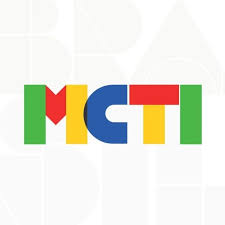
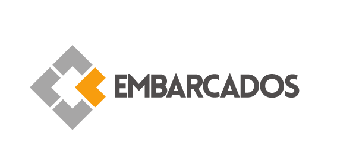
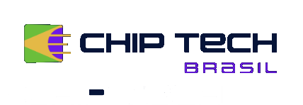

Capacitação prática para inovar e liderar no mundo do hardware e IoT.
Confira o editalREALIZAÇÃO:

PARCERIA:
INICIATIVA:

Kits
1000
Kits distribuídos
entre alunos e professores
Sobre o projeto
O projeto Embarcados capacita docentes e discentes em sistemas embarcados e IoT, com foco prático em hardware, por meio de curso e kits especializados.
Abrir editalPúblico-alvo
A seleção considerou os seguintes critérios para participação:
Professores do IFCE
Ser integrante do corpo docente de qualquer campus participante do IFCE.
Alunos do IFCE
Ser aluno regularmente matriculado em qualquer campus participante do IFCE.
Capacitação de docentes
Serão treinados 100 professores para uso e repasse dos kits de hardware nos campi do IFCE.

Cpacitação de discentes
Com laboratórios prontos e docentes treinados, 900 alunos serão capacitados nos campi IFCE.
Kits de Hardware
Serão entregues 1000 kits com placa controladora, placa de interfaces e debugger.
Plataforma Online
Plataforma com treinamentos ficará ativa por 24 meses, com acesso para professores e alunos.
Treinamento em Programação de Sistemas Embarcados
- 1. Leitura e interpretação de Componentes e Manuais Notas de aplicação e folha de dados técnicos.
- 2. Testes e Protótipos
- 3. Arquitetura de hardware - Princípios e Fundamentos Especificação técnica e Diagrama de Blocos Apresentação do software para PCIs
- 4. Esquemáticos Layouts DRC
- 5. Lista de Materiais e Arquivos de Fabricação Projeto para Manufatura
- 6. Stencil, Fabricação da PCB e Montagem da placa Homologação
- 7. Fornecedores
- 1. Linguagem C - Fundamentos e Exemplos de aplicação Arquitetura para microcontroladores
- 2. Explorando o ambiente de desenvolvimento profissional para microcontroladores
- 3. Programando o microcontrolador montado em módulo: Equipado com o SoC com solução integrada de baixo consumo para Wi-Fi com o kit de desenvolvimento de hardware Programação, Depuração e Testes
- 4. Programação estruturada para microcontroladores Desenvolvimento de Drivers - SPI & I2C
- 1. O que é um RTOS? Fundamentos de RTOS.
- 2. Utilizando o RTOS com o microcontrolador montado em módulo: Equipado com o SoC com solução integrada de baixo consumo para Wi-Fi.
- 1. Teoria de IoT Segurança em IoT.
- 2. Firmware para conexão à nuvem
- 3. Publicando dados de sensores à nuvem (aplicando no Kit de desenvolvimento de hardware)
- 4. Sobre a Nuvem IoT(Plataforma de acesso grátis para publicação de dados via IoT)
- 5. Explorando a Nuvem IoT Dashboard
- 6. Controle de acessos e de custos Segurança
- 7. Nuvers de Mercado